Overwatch 2
Overwatch 2 — это бесплатная командная шутер-игра от первого лица, разработанная и изданная Blizzard Entertainment. Она является продолжением и полной заменой оригинального *Overwatch* (2016), представляя собой масштабное обновление с новым форматом, контентом и бизнес-моделью. Ключевые особенности: • Формат: В отличие от первой части (6 на 6), в OW2 команды сократились до 5 игроков: 1 танк, 2 дамагера и 2 саппорта. • Цель: Командные сражения на различных картах в рамках нескольких основных режимов: – Штурм (Push): Команды борются за контроль над роботом, который толкает баррикаду по карте к базе противника. – Захват точек (Control): Команды сражаются за контроль над центральной точкой (лучшая из трёх раундов). – Перевозка (Escort): Атакующая команда сопровождает груз по маршруту до конечной точки, защищающая пытается их остановить. – Гибрид (Hybrid): Комбинация захвата точки с последующей перевозкой груза. • Герои: Каждый игрок выбирает уникального героя (на данный момент более 35). Герои делятся на три четкие роли, каждая с уникальными задачами и пассивными бонусами: – Танк: Мощные и выносливые герои, создающие пространство для команды, поглощающие урон и инициирующие бои. В OW2 они получили повышенную угрозу и чаще всего в команде только один. – Дамагер (Урон): Герои, сфокусированные на уничтожении врагов. Их задача — быстро выводить из строя противников и фланкировать. – Саппорт (Поддержка): Герои, исцеляющие союзников, усиливающие их или ослабляющие врагов. Ключевые для выживания команды. • Контрсостав (Counter-pick): Ключевая тактика. Умение вовремя сменить героя, чтобы противостоять составу противника (например, взять героя с щитом против снайпера), часто решает исход матча. – Дамагер: Герои с высокой мобильностью или возможностью атаковать на дистанции. – Саппорт: Герои, которые могут быстро исцелять группу или обеспечивать усиления. • Ультимативные способности (Ульты): Самая мощная способность героя, которая заряжается со временем и от действий. Грамотная комбинация ультов команды — основа для победы в решающей схватке (Team Fight). • Командная работа и позиционирование: Координация, фокусировка целей и использование рельефа карты важнее индивидуального мастерства стрельбы.
Основные изменения и механики Overwatch 2: • Переход на Free-to-Play: Игра стала полностью бесплатной, отказавшись от модели единоразовой покупки. • Новая система прогрессии и монетизации: Вместо лутабоксов появился сезонный боевой пропасc и магазин, где за внутриигровую (или реальную) валюту покупаются косметические предметы: скины, голосовые фразы, эмоции и т.д. • Общая доступность всех героев (новым игрокам — постепенно): Все старые герои сразу доступны, новые герои разблокируются через боевой пропуск или внутриигровые задания. • Переход на PvP-ядро: PvE-режим с прокачкой талантов был анонсирован, но выпущен в виде отдельных платных миссий позже. Основной акцент — соревновательный PvP. • Более динамичные и агрессивные бои: Сокращение команд до 5 игроков и переработка ролей ускорили темп игры, сделав её менее "щитовой" и более мобильной. Кибеспорт и контент: • Overwatch League (OWL): Профессиональная лига, хотя её будущее после OW2 стало менее определенным. • Сезонная модель: Контент обновляется каждые 9 недель с новым сезоном, который приносит нового героя, новую карту, новые режимы и косметическую тематическую коллекцию. • Акцент на индивидуальном мастерстве: Система ранговой игры, еженедельные испытания, система одобрения (для поощрения позитивного поведения).
 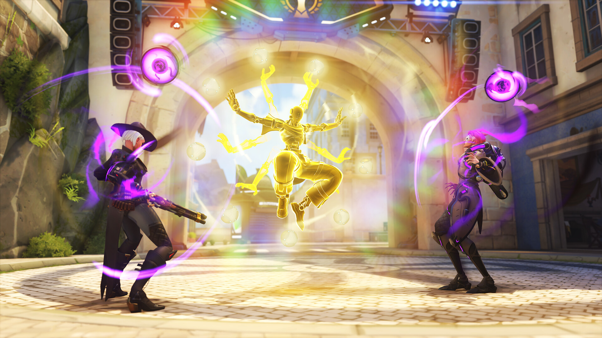
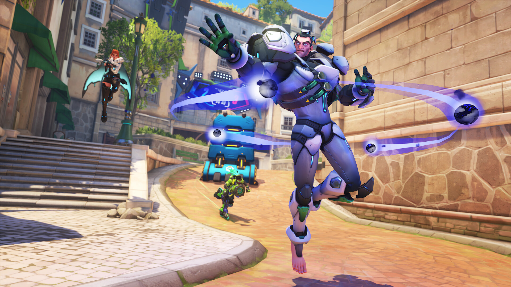
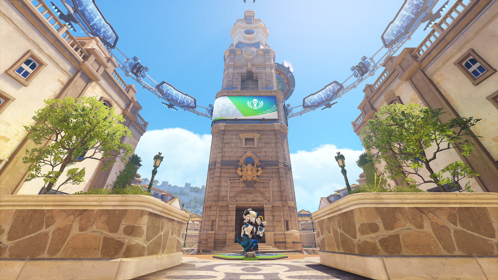
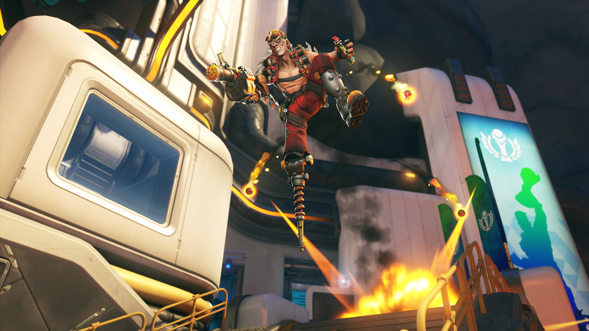
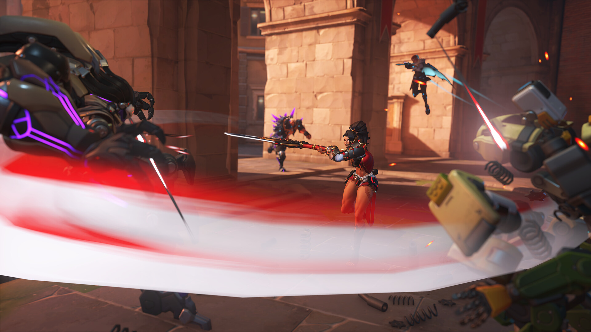
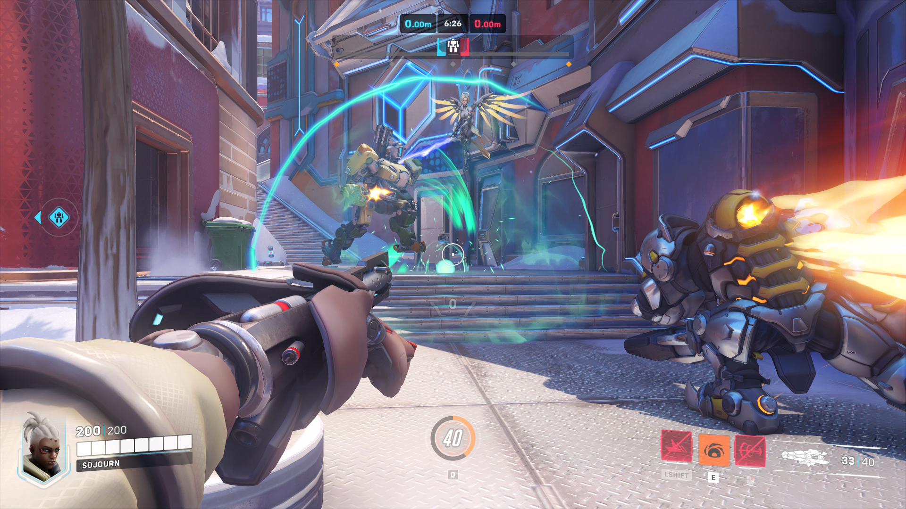
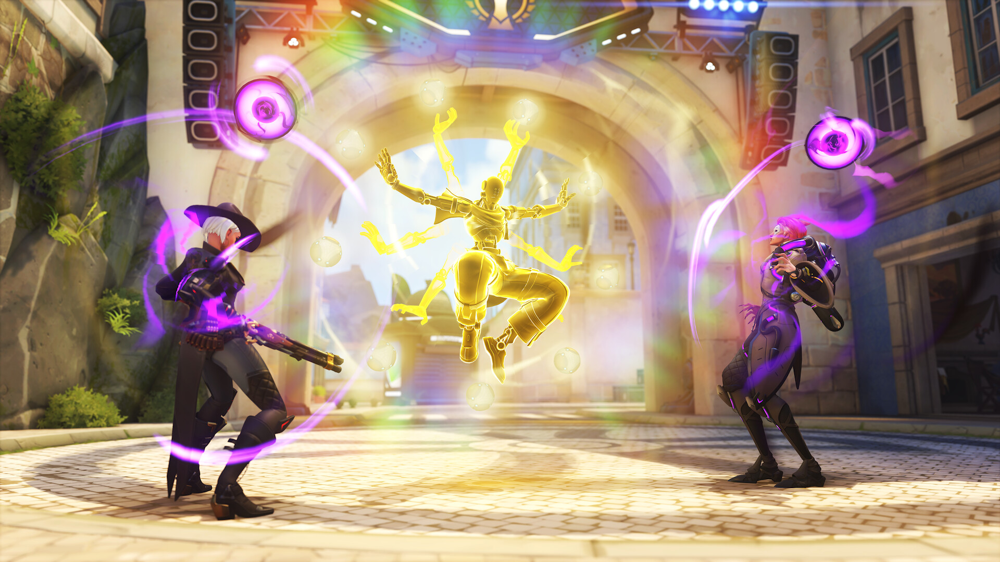
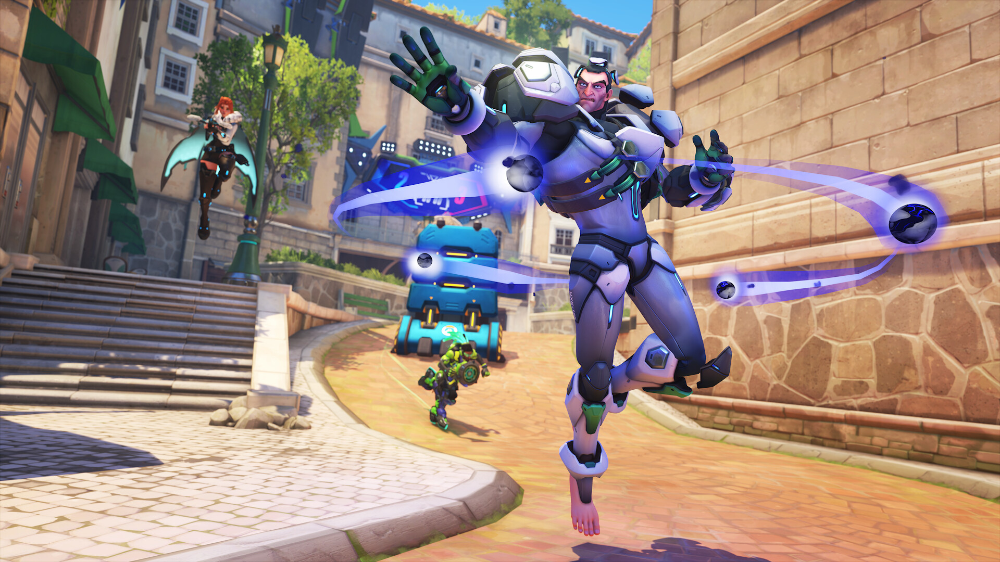
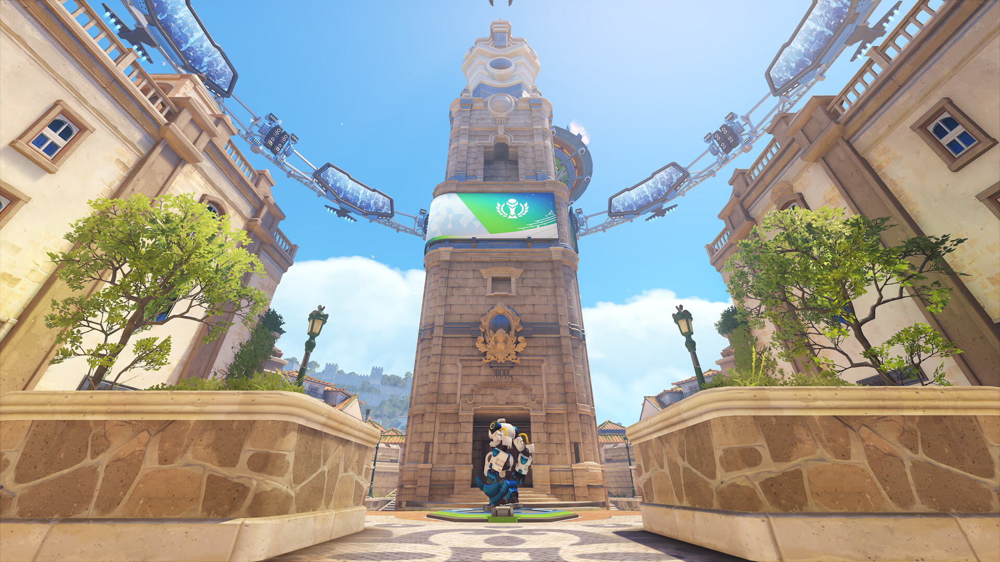
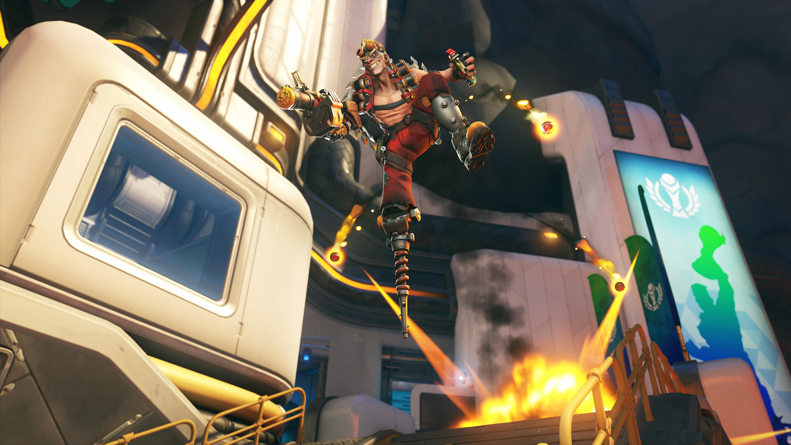
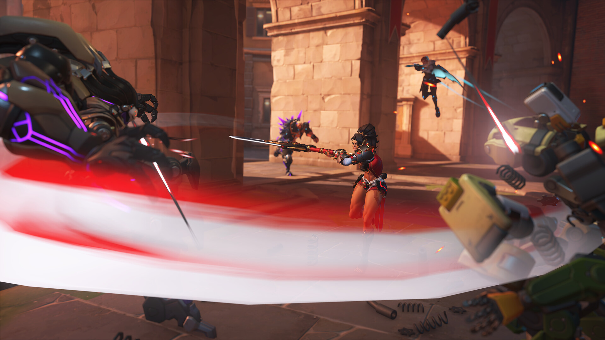
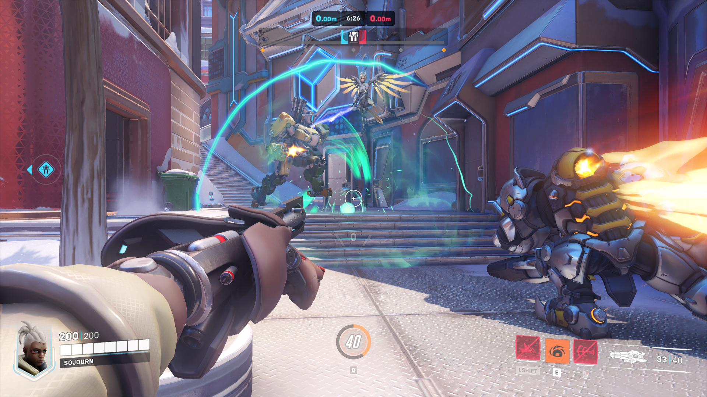
 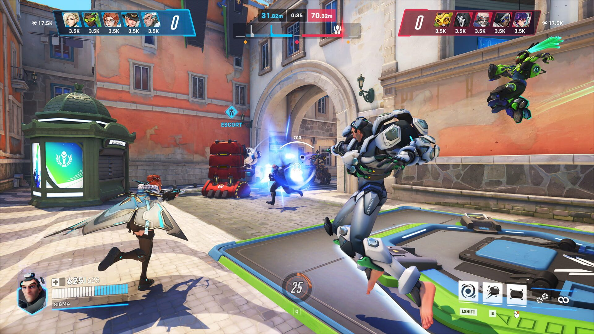
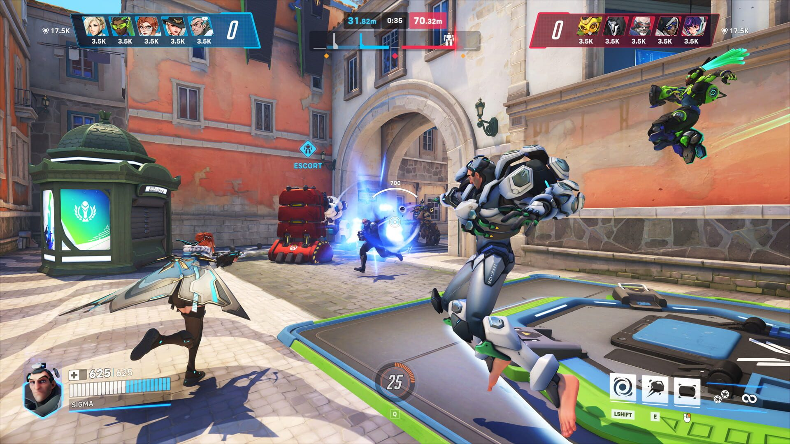
Отзывы
После очередных "замечательных" подборов в рейтинговом режиме, захотелось написать отрицательный отзыв. Вот просто объясните: 1) Как диапазон рангов может варьироваться в пределах 3 рангов (самое лучшее это было Голд2-Даймонд4). 2) Как при поражении и счете 0/2 тебе могут дать "Неожиданный исход" и снять 2 раза больше рейтинга. 3) Как при потной катке на 30+ минут, тебе дают "Ожидаемый исход" и так же дают меньше рейтинга. 4) Почему я не могу узнать кто находится в одном отряде и играет вместе? 5) Пару раз попадались команды с одинаковыми аватарками и никнеймами (в этой игре только так можно понять, что это тима), и отсюда вопрос. Как к дуо игрокам можно подкидывать пати из 4 игроков? 6) Зачем нужен профиль, если у большинства он закрыт. 7) Бывали моменты (и всегда они случались когда была победный матч), что сервер перестает отвечать и всех игроков выкидывает из игры. Такие матчи даже в истории не сохраняются, и конечно же никакого рейтинга тебе или даже компенсации. И это даже не половина всех проблем, я вообще молчу про пофигистическое отношение к нам, людям которые КУПИЛИ овервотч 1. Я люблю эту игру и надеюсь на лучшее, но с каждый обновляем надежды на контору оптимистов Blizzard не остается...
Вы заходите в Overwatch 2 и видите знакомый, идеально отлаженный мир. Уникальные герои, их взаимодействия, динамика боя - это игровая классика, музейный эталон. Но музей этот оказался закрыт на вечную реставрацию. Сюжет не движется, мир не развивается, а администрация (разработчики) занята только тем, что продаёт вам сувениры в лавке у выхода. Каждое обновление - это не новая экспозиция, а лишь прайс-лист на очередные безделушки. Играть можно. Получать удовольствие от механик - да. Но верить в будущее этого мира и испытывать к нему интерес уже невозможно. Очень грустная участь для игры с таким фундаментом.
Как бы данный видеоигровой продукт не поливали помоями, в том числе и я, но я всё равно его люблю. Я поиграл может быть один сезон после выхода второй части и заходил как-то на малое время где то год-два назад. Теперь я скачал эту игру снова и она ощущается так же, как после Москвы вернуться в родную 350-400 тыс. населения гавань. Сама жизнь города то та же, но вот там что-то сделали, тут что-то поменяли, здесь вообще новенькое что-то. И так тепло и приятно на душе, ты просто получаешь удовольствие не смотря ни на что. С этой игрой так же. После всех модных и крутых технологичных сессионок, заходя сюда всё равно удовольствие то получаешь, над игрой работают всё так же, больше желать то и нечего. Да, я понимаю, что близзард сейчас уже не те, многих людей за разработкой игры, которые были до этого, нет, ПВЕ по итогу и не завезли адекватное, но всё же мне нравится, а это главное, наверное, при игре в игрушки.